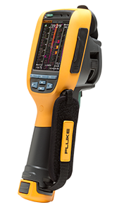
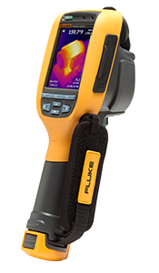

Home
Demos
Products
Videos
Request Info
Resources
新しい Fluke サーモグラフィーは、IR-OptiFlex™ フォーカス・システム、IR-Fusion® テクノロジー、マルチモード・ビデオ録画機能、IR-PhotoNotes™ 注釈システム、および電子コンパスを搭載しています。これらすべてに加え、軽量、片手で操作できるインテリジェントな設計、そして堅牢な構造という特長も備えているため、世界で最も使いやすい業務用カメラとなっています。
現場/保全設備メンテナンス用
建物診断用
汎用
現場/保全用
現場/保全用
建物診断用
建物診断用
汎用


軽量、スリム、堅牢な本体デザインで優れたパフォーマンスを実現
電子的、機械的な問題発見までの時間を短縮し、問題の解決により多くの時間を費やすことができます。
建物診断のためのプロフェッショナルなサーモグラフィー
建物の問題発見までの時間を短縮し、問題の解決により多くの時間を費やすことができます。
コスト・パフォーマンスを重視するプロフェッショナルに理想的な汎用カメラ/td>